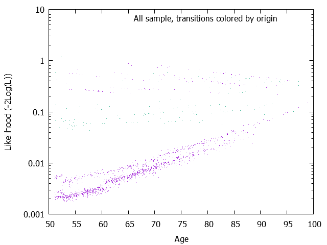
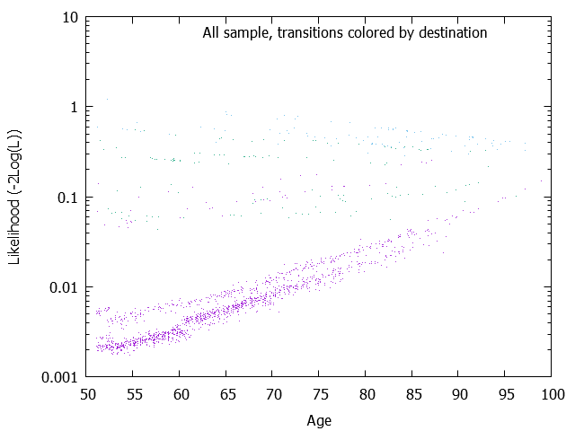
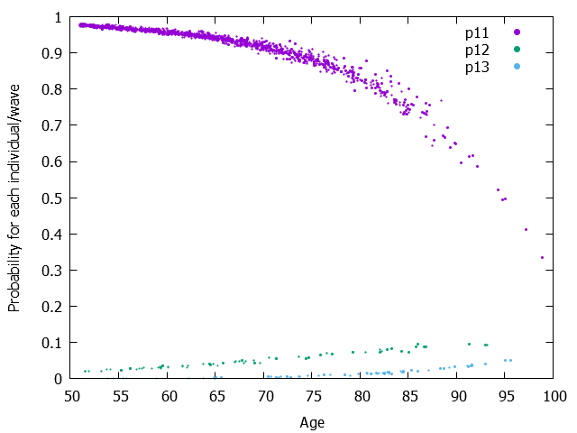
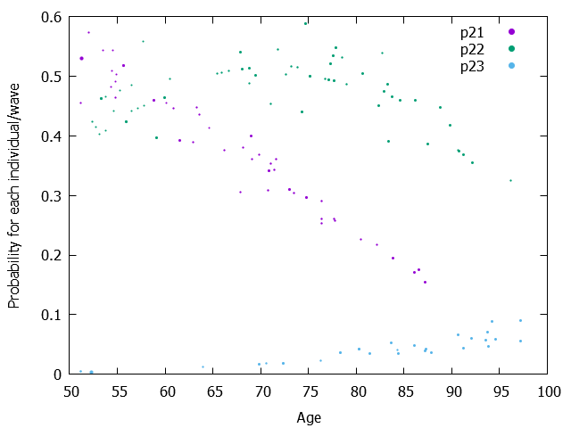

| Model= | 1 | + age |
|---|---|---|
| 12 | -7.9253029 | 0.0451170 |
| 13 | -14.0111208 | 0.1177124 |
| 21 | -0.6313203 | -0.0301202 |
| 23 | -8.0677810 | 0.0623848 |
The Wald test results are output only if the maximimzation of the Likelihood is performed (mle=1) Parameters, Wald tests and Wald-based confidence intervals W is simply the result of the division of the parameter by the square root of covariance of the parameter. And Wald-based confidence intervals plus and minus 1.96 * W It might be better to visualize the covariance matrix. See the page 'Matrix of variance-covariance of one-step probabilities and its graphs'.
| Model= | 1 | + age |
|---|---|---|
| 12 | -7.9253029 ( 0.8936726)W= -8.868[ -9.6769013; -6.1737046] | 0.0451170 ( 0.0124346)W= 3.628[ 0.0207452; 0.0694889] |
| 13 | -14.0111208 ( 1.2095689)W= -11.584[ -16.3818758; -11.6403658] | 0.1177124 ( 0.0149538)W= 7.872[ 0.0884029; 0.1470219] |
| 21 | -0.6313203 ( 0.9226715)W= -0.684[ -2.4397565; 1.1771159] | -0.0301202 ( 0.0131358)W= -2.293[ -0.0558663; -0.0043741] |
| 23 | -8.0677810 ( 1.4273822)W= -5.652[ -10.8654502; -5.2701118] | 0.0623848 ( 0.0170252)W= 3.664[ 0.0290154; 0.0957543] |